The first thing to realise is that all of the rats are alums of the MIT mystery hunt. Therefore each of their reminisces is referencing the title of a previous mystery hunt puzzle. So for example, Claude H. Chinchilla studied [RADIO WAVES], Franklin Shrew got into [DISARRAY] at MIT. The reference to Xavier Gerbils studying Castor and Pollux at the highest level is meant to refer to the Castor and Pollux Meta from 2009. Similarly the two references to getting fully trained on the 2003 puzzles reflect that there were “untrained” and “trained” answers to these puzzles. There should be plenty of paths into recognising this for what it is, so the first thing we do is that we look us the solutions to all of the previous puzzles:
| Rat’s Name | Mystery Hunt Puzzle | Year | Solution |
| Adam A. Agouti | Math is Hard | 2006 | Volkswagen |
| Atlas Gnawer | Head of Sales | 2006 | Sixpence for You |
| Carol Coypu | Making Connections | 2003 | Debtor |
| Clark Ax | Out of Sorts | 2005 | Kiwi |
| Claude H. Chinchilla | Radio Waves | 2008 | Needlepoint |
| Cody Construction | A Research Puzzle | 2006 | Hawaii |
| Cosmo Cricetidae | Bottom Line | 2008 | Volkswagen |
| Elmo Myomorpha | Laureate | 2008 | Friend |
| Ethan Teeth | Making a List Checking it Twice | 2003 | Hawaiian |
| Franklin Shrew | Disarray | 2006 | Friend |
| Godfrey Bandicoot | Snowfield | 2004 | Embroidery |
| Howard the Hutia of Haiti | Hot Shots | 2000 | Onstage |
| Jimmy Dams | Grounded for Life | 2002 | Kiwis |
| Morgan Musquash | Thinking Outside the Box | 2007 | Columned |
| Nyssa Nocturnal | Atlas Shrugged | 2000 | Column |
| Oscar Otter | The Direct Approach | 2000 | Day |
| Peter Porcupine | Shadow of a Doubt | 2001 | Debts |
| Rob-Rick Gopher | Two of a Kind | 2004 | Sixpence |
| Rosie Upriver | Message Redacted (Fiscal) | 2009 | Slide Guitar |
| Sandy Incisors | Lost in Translation | 2004 | Gazpacho |
| Schoolfellow “Hank” Hyrax | Light Reading | 2003 | Days |
| Tate Pacas | Cubicle | 2003 | Gazpacho |
| Vernon Muskrat | Console Nation Prizes | 2009 | Lavender |
| Werner Rodent | Grizzly Ale | 2004 | Lavender |
| Xavier Gerbils | Castor and Pollux Meta | 2009 | Guitar Solo |
| Zoe Dammaker | Police Lineup | 2008 | Stage |
Clearly the answers pair up and this gives us what we need to survive the interview:
The interview questions are repeated twice, they are found here.
Identify the Alumni from the bottom of the page:
| Clue | Alumnus’s Name | Year |
| He was a member of a team that won the National Medal of Technology. He later got to shoot Charlie Sheen, professionally. His MIT thesis was evaluated by the New York Review of Books. It is the only college thesis that they have ever covered. | Steve Altes | 1984 |
| He has piloted the space shuttle more than once, most recently in 2010. | Dominic Antonelli | 1989 |
| He became a professional basketball player after graduating from MIT | Jimmy Bartolotta | 2009 |
| He was a Calvin Klein model, a winner of American Gladiators, and played an FBI agent for 93 episodes of a television series. | Dylan Bruno | 1994 |
| He co-founded a battery company based on nanophosphate technology. He also co-founded a company that makes superconducting wire. | Yet-Ming Chiang | 1980 |
| ”Maker hero” and founder of an electronic hobbyist company, she participated in the drafting of the Open Source hardware definition. | Limor Fried | 2003 |
| A digital librarian, he founded the Internet Archive. | Brewster Kahle | 1982 |
| He founded a free online education platform and non-profit organization. His platform has over 200,000 subscribers who watch more than 2700 micro-lectures, predominantly in the sciences and mathematics. | Salman Khan | 1998 |
| A serial entrepreneur who has started six companies, he invented the optical mouse. | Steve Kirsch | 1978 |
| One of PC Gamer’s “Game Gods”, he is the master of the leather goddesses, and one of only two game writers admitted to the Science Fiction Writers of America. | Steve Meretzky | 1979 |
| He was a vice president of the European Central Bank who became prime minister of a European country. | Lucas Papademos | 1970 |
| He co-founded and is the CEO of a computer game company. He was a member of Time’s list of the 100 most influential people of 2008, and is credited with redefining the music games genre. | Alex Rigopulos | 1992 |
| He was the CEO of an e-commerce company until its acquisition by Oracle. Today he works as a rock musician. | Mahendrajeet “Miki” Singh | 1985 |
| A Computer Science associate professor and senior researcher at Google, she has been named the “sexiest geek alive” by the New York Times. | Ellen Spertus | 1990 |
| This fictional billionaire playboy, industrialist, and engineer suffered a severe chest injury during a kidnapping. | Tony Stark | 1987 |
| He was a Republican senator from New England, and the youngest member of the Senate for the entirety of his six-year term. | John E. Sununu | 1986** |
| He was a Major League Baseball pitcher. | Jason Szuminski | 2000 |
| He is the science and technology adviser to Steven Spielberg, and invented the “g-speak” data interface used in Minority Report. | John Underkoffler | 1988 |
| He was an Olympic-level wrestler, an operatic base baritone, and an actor, who got to sing opera while taking on a dynamic villainous role in an Arnold Schwarzenegger film. He famously wore his brass rat on screen while playing a role in a comedy film. | Erland Van Lidth de Jeude | 1977 |
| He won the main event at the World Series of Poker. | Robert Varkonyi | 1983 |
| He sang in the MIT Logarhythms, and went on to be an American Idol finalist. | Chris Vu | 2004 |
| He won the Nobel Memorial Prize in Economic Sciences for his analysis of economic governance and business structures for conflict resolution. | Oliver E. Williamson | 1955 |
Now we match the years/alumni to the brass rat images and look at the fake rat name. It has an identical enumeration and pattern as the actual alumnus. The fake name and the real name have exactly one letter in common.
| Brass Rat | Year | Rat’s name | Real Alumnus | Letter in common |
| 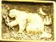 | 1998 | Jimmie Dams | Salman Khan | M |
| 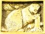 | 1989 | Godfrey Bandicoot | Dominic Antonelli | O |
| 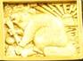 | 2000 | Nyssa Nocturnal | Jason Szuminski | S |
| 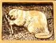 | 1984 | Ethan Teeth | Steve Altes | T |
| 1970 | Peter Porcupine | Lucas Papademos | P |
| 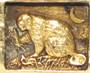 | 1988 | Cody Construction | John Underkoffler | O |
| 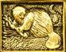 | 1990 | Rosie Upriver | Ellen Spertus | P |
| 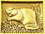 | 1986 ** | Adam A. Agouti | John E. Sununu | U |
| 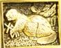 | 1992 | Elmo Myomorpha | Alex Rigopulos | L |
| 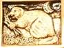 | 1994 | Oscar Otter | Dylan Bruno | A |
| 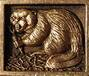 | 1982 | Franklin Shrew | Brewster Kahle | R |
| 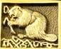 | 1979 | Sandy Incisors | Steve Meretzky | S |
| 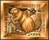 | 2004 | Clark Ax | Chris Vu | C |
| 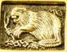 | 1985 | Schoolfellow “Hank” Hyrax | Mahendrajeet “Miki” Singh | H |
| 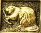 | 1983 | Morgan Musquash | Robert Varkonyi | O |
| 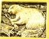 | 2003 | Carol Coypu | Limor Fried | O |
| 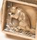 | 1955 | Claude H. Chinchilla | Oliver E. Williamson | L |
| 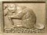 | 1977 | Horace The Hutia of Haiti | Erland van Lidth de Jeude | A |
| 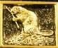 | 1978 | Atlas Gnawer | Steve Kirsch | T |
| 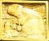 | 2009 | Cosmo Cricetidae | Jimmy Bartolotta | M |
| 1980 | Rob-Rick Gopher | Yet-Ming Chiang | I |
| 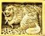 | 1987 | Tate Pacas | Tony Stark | T |
**MIT’s websites claim that he got his SB in 1986 and his SM in 1987. The Washington Post reports that he got both in 1987. The Post is wrong.
The common letters spell “MOST POPULAR SCHOOL AT MIT”.
That would be the school of ENGINEERING.